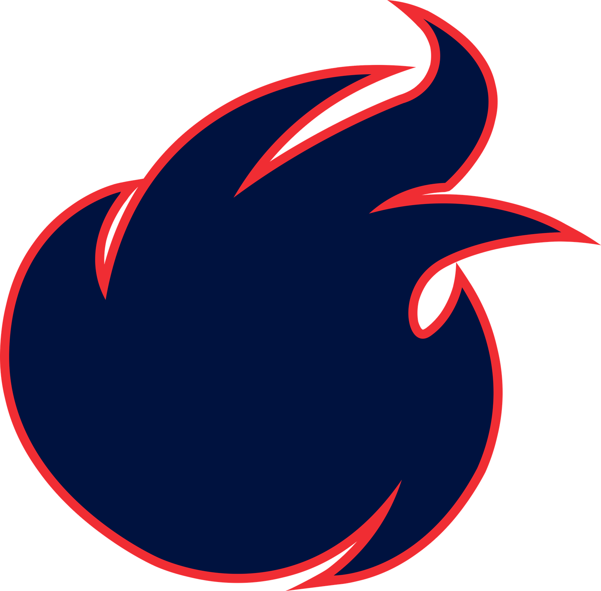
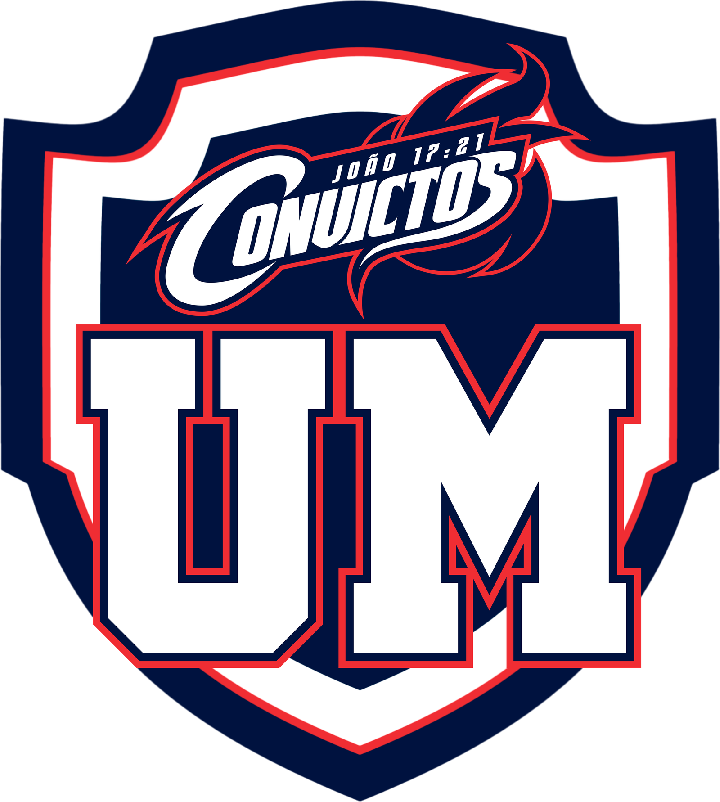

"Para que todos sejam um." — João 17:21
O carnaval não é apenas um feriado. É o período de maior vulnerabilidade para a nossa juventude — e exige uma resposta intencional.
Convictos é um movimento cristão voltado para jovens que promove encontros, conferências e experiências de fé, inspirando uma geração a viver com propósito, identidade em Cristo e convicção dos princípios do Reino de Deus.
Reunir a juventude no período de Carnaval para criar um ambiente impenetrável de adoração e exaltação a Cristo.
Nossos valores não são negociáveis. Tudo o que construímos está fundamentado unicamente naquilo que Cristo deixou para nós.
Levantar uma juventude com o coração voltado inteiramente para a Palavra, blindada contra as dúvidas do mundo.
Inscreva seu interesse e seja o primeiro a saber quando as inscrições para o Convictos 2027 abrirem. Uma geração que não recua.
Sem spam. Só o que importa — a Conferência Definitiva.